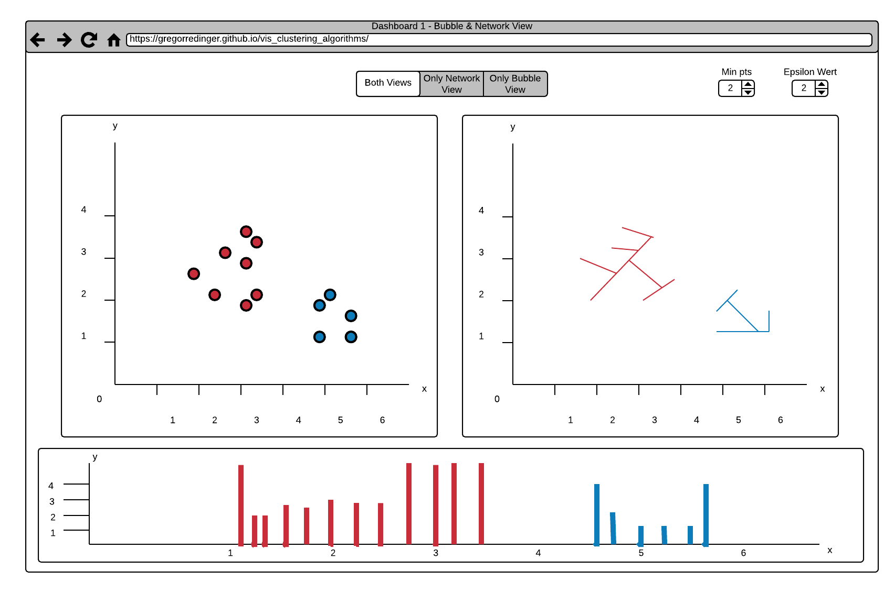
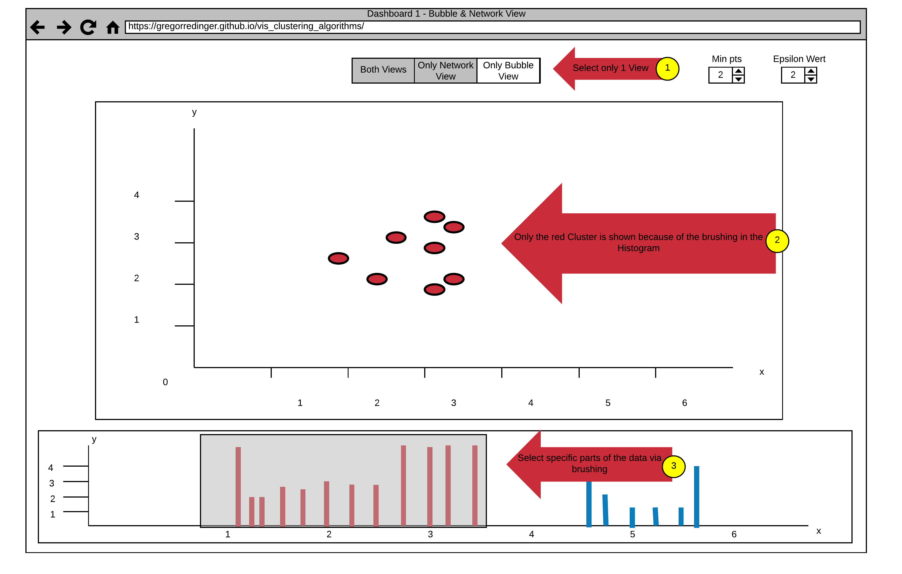
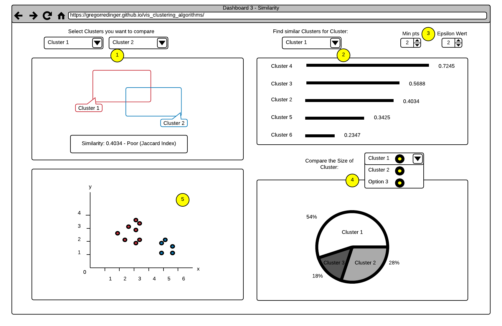
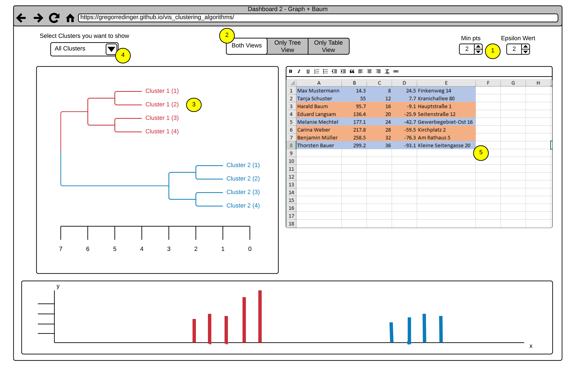

|
Markus Hunner |
Gregor Redinger |
In our Project we have the goal to visualize the step-by-step functioning of different clustering algorithms. The algorithms we will analyze are K-means, DBSCAN and OPTICS. There already exist several visualizations of some of these algorithms on the web. For example:
While those visualizations provide a good explanation of the abstract workings of those clustering algorithms (e.g. assigning points to clusters, recalculating the cluster centers, reassigning points ...) they don't provide a clear visualizations of the concrete step-by-step operations the algorithm performs to achieve its results. A good example of "showing but not explaining" is the visualization of DBSCAN by Naftali Harris: While this visualization clearly indicates the use of "range queries" by drawing colored circles for every performed operation on a given point the viewer is not able to understand what a range query is and how it is calculated without consulting a textual description of the algorithm. The whole visualization seems more like a explanatory video for whích the user is able to choose from several different starting conditions. Additionally the provided visualizations for the K-means algorithm don't dive into the details of different initialization or update strategies. Both of which are implementation details, that can impact the performance and result quality of K-means in a significant way.
The audience of already existing visualization examples seem to be users, who have already read about the workings and implementation specifications of the discussed algorithms, but have a hard time understanding the abstract concepts behind the performed calculations.
Our goal is to provide visualizations, that should ideally enable a user without prior knowledge of the algorithms to implement them after interacting with our application. For this it is necessary to shift the focus away from the abstract concepts of the algorithms and visualize them step-by-step for small datasets. In contrast to existing visualizations all steps taken by the algorithms have to be made explicit to the user. Therefore we aim to provide a visualization much more like the exercises used to teach those algorithms to students, than a video-like representation of their abstract concepts.
In the course 052813 Scientific Data Management the suggested algorithms where taught by "schreibtischlauf"-assignments; Which means to run through the algorithm on a piece of paper by hand.
For this it is necessary to visualize the algorithms using much less datapoints than used by the already existing visualizations. Ideally a user should be able to "calculate" the next step mentally and instantly verify their proposed solution by clicking a "Next Step"‑button. This also requires the usage of a distance measure, which can be interpreted by a user without doing calculations by hand. Like shown in Fig1. the manhatten distance was used in the course Scientific Data Management, enabling students to measure the distance between two points by counting the gridlines between them.
Another advantage of using a smaller set of data points is that the exercise can easily be edited by a user. By allowing editing the initial state with mouse interactions - e.g. clicking the gridlines of the coordinate system to add or remove points - a user can come up with their own exercise, breaking and creating new clusters with just a few mouse clicks. Showing the current dataset in json format using a textarea could enable users to easily share their generated exercises.
Additionally we would like to explore fitting and detailed visualizations for the range queries used in DBSCAN and Optics. Something existing visualizations seem to be lacking.
Our overall goal is to perform a Design study by implementing a visualization that improves on already existing visualizations of clustering algorithms and provides a way to understand those algorithms by "follow-along-exercises" without the need to study their implementation details beforehand. To achieve this we aim to solve the following tasks:
Achieving those goals should result in "exercise-like" visualizations of clustering algorithms, that make every small step the algorithm performs explicit and thus can explain the algorithms in detail without requiring prior knowledge of the user or an excessive amount of textual explanation.
An additional goal to aim for - provided enough time - could be to expand the application for DBSCAN and/or OPTICS to be a true interactive version of the pen-and-paper of exercises of the course Scientific Data Management, allowing the user to propose a next step - e.g. marking a point as "core point", "reachable" or "noise point" for DBSCAN or adding a bar to the OPTICS histogram - and to get instant feedback if their choice was correct or wrong.
This Dashboard consists of three Views. The Histogram View on the Bottom of the Page shows a Reachability-plot. This is a 2D plot, with the ordering of the points on the x-Axis and the reachability distance on the y-Axis. Because points belonging to a cluster have a low reachability distance to their nearest neighbor, the clusters show up as valleys in the reachability plot.
The Bubble and the Network View provide a better Overview for the Distribution of the Clusters.
The Default Setting shows the Bubble and the Network View side by side, but it's also possible to enlarge one of the Views and hide the other. This can be done by using the View Choosing Buttons on the Top of the Page (see Arrow 1).
Another Interaction is to select specific Data in the Histogram via Brushing (see Arrow 3). The Data in the Bubble or Network View gets updated accordingly (see Arrow 2). This interaction allows a fine-grained Analysis of the Data.
It's also possible to adjust the two Parameters of the Optics Algorithm. Nearby Arrow 1 are two numerical Steppers to adjust the Parameters "Min pts" and "Epsilon". The Epsilon Value is used to set a maximal Distance to limit the Complexity of the Algorithm. The "Min pts" Value describes the number of Points required to form a Cluster.
 This Dashboard also consists of three Views.
The Histogram View (Point 6) with the same Brushing Functionality as in Dashboard 1.
A Tree Map View (Point 4).
And a Graph View (Point 5).
The Option to adjust different Views (Point 2) and the numerical Steppers to adjust the Parameters of the Algorithm also stays the same as in Dashboard 1.
A new Functionality in this Dashboard is the Option to select whole Clusters to show or hide via a dropdown Menu (Point 1). This Functionality allows a finer selection
in the Histogram View by excluding all points of a Cluster.
The first View in this Dashboard (see Point 1) offers a comparison Function between two Clusters. The Clusters can be selected via two Dropdown Menus, that shows a list of all Clusters. The View shows the Similarity as a Number and as two Rectangles. The more the Rectangles are Overlapping, the higher is the Similarity between the selected Clusters. This Information is also displayed as a Number on the bottom of the View. The Value that Indicates the Similarity ranges from 0 (totally different) to 1 (the same), we decided to point this out by classify the Number with (Poor, Good, Excellent).
The second View (see Point 2) offers a Search Function for similar Clusters. The User can select a Cluster via a Dropdown Menu and the View shows a List of all Clusters in descending order by their Similarity to the selected Cluster. The Similarity is expressed by the Length of a Line and the Value of the Similarity Index. We also plan to add a Tooltip to this Index Value, that explains it's meaning in more detail.
The third View (see Point 5) shows an Overview of the Clusters in a Coordinate System. Different Clusters have different Colors.
The fourth View (see Point 4) shows a Comparison between the Cluster Sizes as a Cake Diagram. The User can select the Clusters he want to compare via a Dropdown Menu (Selection of multiple or all Clusters is possible). This allows the User to get a fast Overview of the Cluster Sizes. We also think about a Selection Function in the third View that allows the Selection of specific Parts of a Cluster and shows the Distribution in the Cake Diagram.

He imports his List as csv File and adjust the Epsilon and Minpts Parameters. At first he struggled a bit with the Meaning of this Variables, but by hovering over them a tooltip with a detailed explanation pops up. Then he decided that he just need the bubble View and enlarge this View by clicking on the View Selector Button on the top of the Page. After the Application draw all Points on the View, he realized that there are way to many Clusters on the Map to get a good Overview. So he select specific Clusters by brushing over the Histogram, which results in a clearer and easier to read View. After examining his collected Data with our Tool he is able to isolate possible Epidemic Sources. He found out that the Epidemic is caused by polluted Water and saved the live of many People, thanks to our Dashboard.
Frank, the Owner of a local Grocery Store wants to offer his Customers the Option of a 10 Minute Delivery, to compete with Amazon Fresh, that started recently in his City. Because a 10 Minute Delivery is not possible in the whole City, he plan to restrict his Offer to a specific Street. He also thinks that only People with a relatively high Income are willing to pay the Delivery Fee, so he want to limit his Marketing to these Kind of People. Thankfully he had a List with the Income and the Residence of all People of his City as Csv. The Problem is to evaluate the List by himself would take way too much time, so he decided to use our Application instead.
At first he imports his List Data in our Application and adjust the Epsilon and Minpts Parameters. Like the Doctor before, the Tooltip Explanation help him to find the correct Settings. He decided to stick with the default View Settings that shows them Side by Side, because he need both. After analyzing the Tree View (Point 3), he decided to remove all Clusters with a low Income. He only select the Clusters with high Income over a Dropdown Menu (Point 4). The View updates and show the desired Results. Now he searches in the Table View (Point 5) after all Entries with the Street, where he plan to offer his Delivery Service. Because the Table View only Shows the Results of the selected Cluster, he can complete his search in no time.
Lucidchart. Online-Software für die Erstellung von Flussdiagrammen & Grafiken jeder Art. (2017, October 26). Retrieved November 20, 2017, from https://www.lucidchart.com/pages/de
We will use Javascript as our Programming Language. We think its a good choice because there are many libraries and tools for building web Applications in this Language.
We will use Babel as a Preprocessor for our Js Code. This allows us to use ES6 Features(import/export, for of loops,...) and ensures that our Code will run in older Browser too.
We will use Webpack as Module Bundler. So we can structure our Code in a clean way by modularize it. Webpack will then take care of stitching together all this modules (and their dependencies) into a single file in the correct order.
Since D3 is the De-Facto-Standard for building Diagrams in Javascript, we decided to use it as our Tool of Choice.
To Document our Code we will use Jsdoc because it's very similar to Javadoc, a tool we already gained a lot of Experience with.
To manage our Dependencies we will use the node package manager. We think this is a good choice because it's much easier to manage all our Dependencies in one Place. Npm will also take care of updating our Packages and warn us about deprecated Packages.
On the Server Side we will use node in Combination with express as Server. This Combination is very common and powerful for creating APIs. It's also a benefit that we can manage our Dependencies with npm on Client- and Server-side.
As IDE we use Webstorm because it's especially designed for Web Development and very reliable and powerful.
{kind=link}